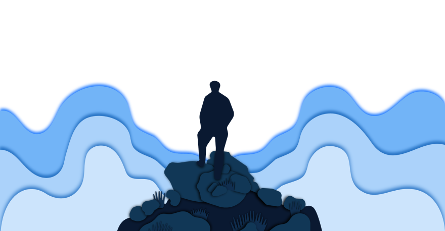
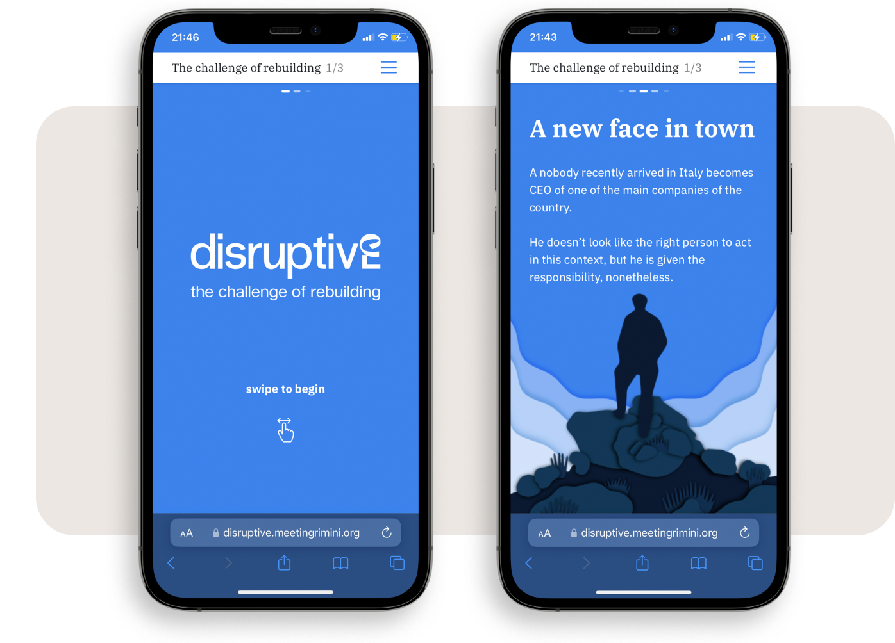
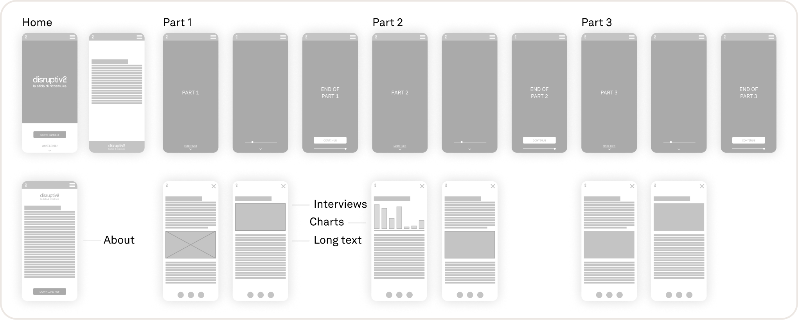
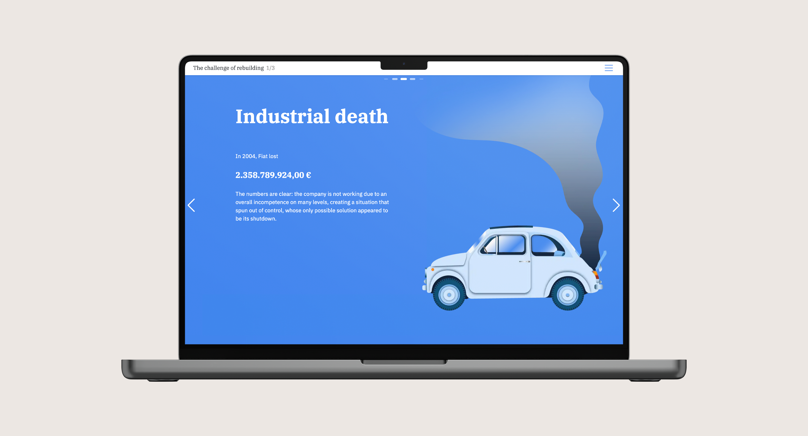
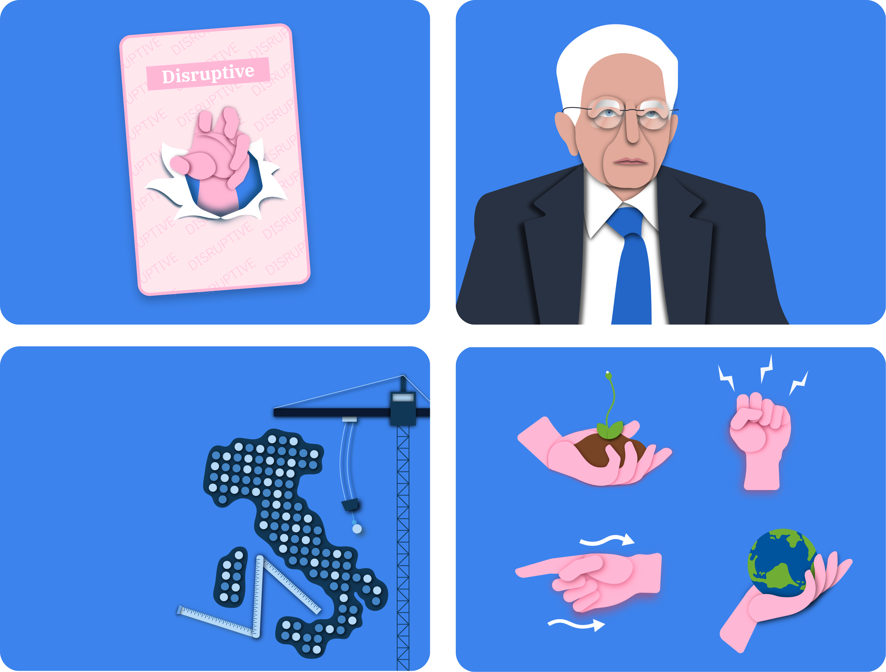
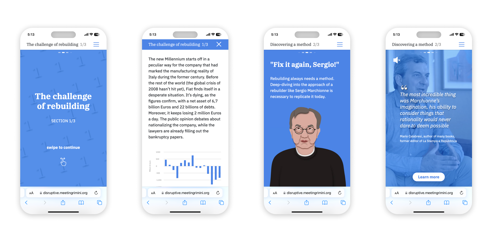
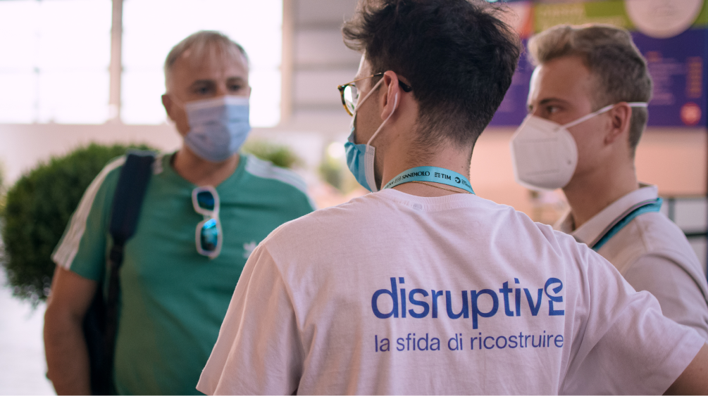
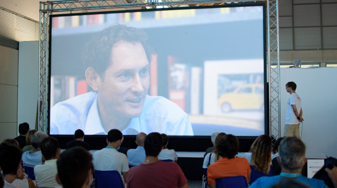

Disruptive: The challenge of rebuilding
"The challenge of rebuilding" is a design-centered digital first exhibition born in 2020 from a group of university students, while facing the uncertainties of a generation looking ahead.
Team: Federico Pozzi, Marco Pari, Andrea Silvano, Giovanni Clericetti, Alice Bocchio, Michele Bruno
Rethinking digital exhibitions
Visual, experience and experiential design seamlessly blend with storytelling giving birth to an engaging and fascinating 360º experience. Thanks to original content, such as illustrations, video-interviews and other digital content, Disruptive is a completely new way of exploring and approaching the great rebuilding challenge that awaits.





Narrators for a great story
The project was designed during the pandemic. As Covid-19 restrictions ceased, we were also able to bring our project to a phisical exhibibition at Riminifiera, designing a space to present the interviews and the life of Sergio Marchionne.

